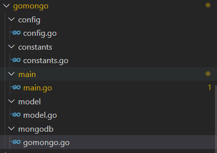

本文采用mongo-driver/mongo驱动操作数据库
设计mongo插件结构
将代码分为如下结构
model : odm模型，主要是映射为数据库存储的表结构
constants : 存储一些常量
config : mongo的配置信息，比如空闲时长，连接数，超时时间等
mongodb : 实现了mongo的连接和关闭等功能。
目录结构如下

mongo的连接和断开
在mongodb.go中实现了连接和断开操作
初始化
1 | var ( |
连接数据库
1 | func SetConnect() *mongo.Client { |
关闭数据库
1 | func Close() { |
在model中定义模型
定义的模型加上bson标签，这样可以映射到数据库里了
1 | type UserData struct { |
在main函数中实现一些demo
在main函数中实现一些demo，包括单条插入，多条插入，单条更新，多条更新，分组查询，分页查询
1 单条插入
1 | //单条插入 |
2 多条插入
1 | //多条插入 |
3 查找单条
1 | //查找单个 |
4 查找多条
1 | //查询多个结果集，用cursor |
5 更新一条
1 | //更新 |
6 更新多条
1 | //更新多条记录 |
7 分组查询
1 | //分组查询 |
8 分页查询
1 | //分页查询 |
源码地址
可以下载源码，二次封装放到项目中直接使用
https://github.com/secondtonone1/golang-/tree/master/gomongo
感谢关注公众号